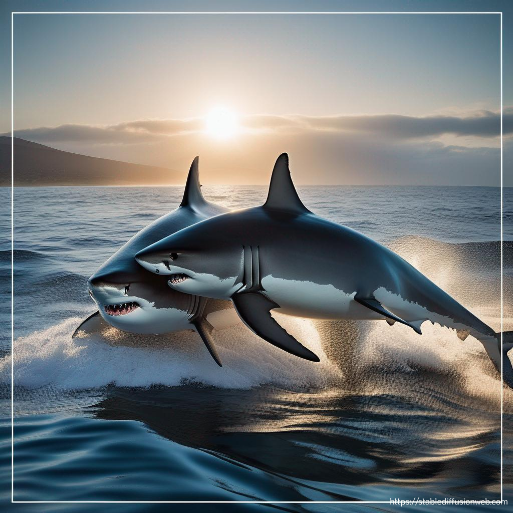

The Unknowns of the "White" Shark
Sistem Pernafasan
Hiu putih bernapas melalui mulutnya karena tidak memiliki penutup insang atau insang pada insangnya. Hal ini terjadi akibat variasi tekanan rongga mulut yang disebabkan oleh pergerakan rongga mulut hiu ke atas dan ke bawah. Insang hiu juga memiliki lima celah atau lebih yang terbuka ke dalam air. Hiu mengambil oksigen dari lingkungannya di kawasan ini. Karena berenang ke depan memaksa air melewati insangnya, berenang sangat penting bagi hiu.
Hiu membutuhkan air di insangnya untuk bernapas dan mendapatkan oksigen. Hiu dapat bertahan di darat selama kurang lebih enam puluh menit. Insang hiu berfungsi sebagai sistem pernapasan utama dan membantu pertukaran karbon dioksida dan oksigen terlarut saat terendam air. Hiu Pun memanfaatkan saluran bukal sebagai saluran keluarnya air dari mulut dengan menggunakan pendekatan ventilasi ram (Martinez, 2023).
Sistem Peredaran
Sistem peredaran darah hiu putih, Carcharodon carcharias (Linnaeus), mengandung retia mirabilia besar yang sama yang memungkinkan hiu lamnid lainnya, porbeagle, Lamna nasus (Bonnaterre), dan mako, Isurus oxyrinchus Rafinesque, untuk menaikkan suhu tubuh mereka melebihi suhu air di sekitarnya. Retia mirabilia bertindak sebagai arus balik panas penukar yang mempertahankan panas metabolik di dalam jaringan dan mencegah panas terbawa sirkulasi dan hilang melalui insang selama respirasi. Meskipun lebih hangat dari air, hiu tampaknya tidak melakukan termoregulasi. Suhu ototnya berubah perlahan dengan suhu air dan menunjukkan inersia termal yang cukup besar. Karena perpindahan panas melalui sirkulasi sangat berkurang karena panas yang berlawanan arah penukar panas dan karena perpindahan panas secara konduksi lambat pada sejumlah besar otot, maka hal ini terjadi diharapkan suhu otot akan meningkat beresonansi perlahan terhadap perubahan suhu air (Carey et al., 1982).

Sistem Pencernaan
Sistem pencernaan hiu putih terdiri dari cavum oris, oesophagus, ventriculus, kloaka dan anus. Lidah pipih di dasar cavum oris, dan gigi di dalam mulut berada di rahang yang menghadap ke arah belakang untuk menahan mangsa yang akan ditelan. Otot daging sphincter terletak pada bagian posterior lambung yang berbentuk U. Cucut memiliki bagian usus yang terhubung ke lambung dengan struktur yang unik, yang disebut katup spiral. Lipatan spiral di dinding usus mempercepat absorpsi makanan, sehingga cucut tidak perlu usus yang panjang untuk mencerna makanannya. Sistem pencernaan seperti ini mencegah bagian tubuh mangsanya melewati usus tanpa tercerna secara sempurna (Partaya, 2021).
Sistem Ekskresi
Sistem ekskresi yang dialami hiu putih adalah dengan mengeluarkan kotoran melalui tempat yang sama tempat mereka melakukan hubungan seksual. Mereka tidak memiliki lubang terpisah untuk mengeluarkan dan bereproduksi. Sistem urogenital terdiri dari sistem kemih dan sistem reproduksi. Tujuan dari sistem saluran kemih adalah untuk memurnikan tubuh dari limbah Nitrogennya. Sistem saluran kemih pria dan wanita bekerja dengan cara yang sama. Sistem saluran kemih hiu mencakup kandung kemih dan saluran kemih, tetapi tidak seperti spesies ikan bertulang, hiu tidak mengeluarkan urin tersebut melalui sistem saluran kemih tradisional. Hiu perlu menjaga kadar garam terlarut dalam tubuhnya setiap saat untuk menjaga daya apung dan menghindari dehidrasi akibat air laut yang mengalir di insangnya. Untuk mencapai hal ini, mereka akan mengubah urin menjadi urea yang dapat disimpan dalam aliran darah. Kelebihan urea diserap ke dalam jaringan otot dan dikeluarkan melalui kulit hiu (Butherus, 2017).

Sistem Reproduksi
Hiu telah mengembangkan metode pembuahan internal untuk reproduksi, berbeda dengan ikan bertulang sejati, yang melepaskan telur dan sperma ke dalam kolom air. Sirip perut mengandung alat kelamin jantan yang disebut "clasper". Betina memiliki "kloaka", lubang yang membawa telur ke rahim. Jantan memasukkan claspernya ke dalam kloaka betina, membuahi sel telur dan melepaskan sperma. Ini terjadi biasanya saat hiu berenang sejajar satu sama lain; hiu jantan memegang hiu betina dengan giginya, seringkali meninggalkan bekas gigitan di tubuh hiu betina. Hiu dewasa biasanya menikah pada musim semi dan musim panas. Masa kehamilan sebagian besar spesies berkisar antara 9 bulan hingga 2 tahun. Anjing-anjing ini dilahirkan sebagai miniatur dari orang tuanya, dan begitu mereka lahir, mereka hanya perlu berenang melalui lautan untuk menjaga diri mereka sendiri. "Viviparity aplacental": Plasenta tidak ada di dalam rahim, jadi embrio akan berkembang di dalam sel telur dan menetas di dalam tubuh betina. “Pup” atau disebut anakan ikan hiu yang sedang berkembang akan terus diberi nutrisi melalui sel telur yang tidak dibuahi satu sama lain. Sangat sedikit "pup" yang bertahan hidup karena banyaknya saudara kandungnya melakukan tindakan kanibalisme (Murch & Smith, n.d.).